下記の場合、
/math-e3c0cbf91ece024841ff9fdb38694186.png "n\,\!") の実現には、ワイブル分布からの
の実現には、ワイブル分布からの/math-6ce07c4566b882f5b04c4fd4ec104550.png "y_i \,\!") 、 値
、 値 /math-b714d71dd0cdb2c881fae49429ac19db.png "x_i \,\!") が観測されます。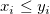
が観測されます。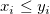
下記の場合、の実現には、ワイブル分布からの 、 値 が観測されます。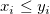
2つの状況があります。
次の場合、観測値を正確に指定します。/math-e154fe4295c6340907dbb51128201755.png "x_i=y_i \,\!")
次の場合、下限によって知ることができる右側の打ち切り値を指定します。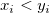
ワイブル分布の確率密度関数は、尤度に対して正確に指定した観測値の寄与となり、次の式で与えられます。
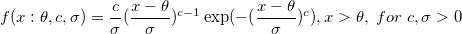
ワイブル分布の生存関数は、尤度に対して右側の観測値の寄与となり、次の式で与えられます。
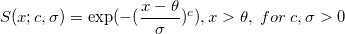
ここで、 /math-eda199874d89f6beec2062820f4b61c9.png "\theta\,\!") 切片パラメータはしきい値パラメータと呼ばれ、
切片パラメータはしきい値パラメータと呼ばれ、/math-79ce6cdd2db95f0db5cefeeadc51b5bc.png "c \,\!") は、ワイブルの形状パラメータであり、
は、ワイブルの形状パラメータであり、 /math-596589cfba308c784b8a5b3f8919ff44.png "\sigma \,\!") は、ワイブルのスケールパラメータです。
は、ワイブルのスケールパラメータです。
の観測の/math-a3fd7097926ade7405b7390b2e5ec4af.png "d\,\!") が、 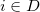で正確に指定され、示されれば、 残りの 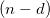 観測値は、右側打ち切り値となります。そして、尤度関数 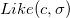 が次のように与えられます。
が、 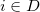で正確に指定され、示されれば、 残りの 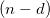 観測値は、右側打ち切り値となります。そして、尤度関数 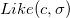 が次のように与えられます。
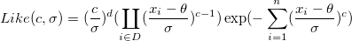
カーネル尤度関数は次式で与えられます。
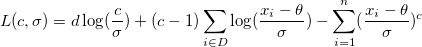
派生値 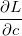,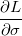,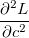,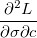, 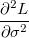 は、それぞれ /math-c9db0818268102735575605d2e53818c.png "L_1 \,\!") ,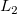 ,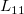 ,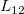 ,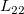 で表され、最大尤度の見積値、 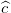 および 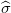 は、次の数式の階です。: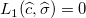 および 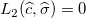
,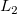 ,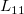 ,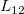 ,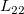 で表され、最大尤度の見積値、 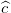 および 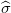 は、次の数式の階です。: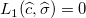 および 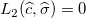
および の漸近標準誤差の見積もりは、次の式で与えられます。
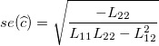 および 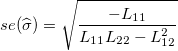
/math-34e3a22fc702ec4461ac776139dd07cd.png "\widehat{c}\,\!") およびの相関係数の見積もりは、 次の式で与えられます。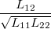
およびの相関係数の見積もりは、 次の式で与えられます。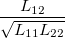